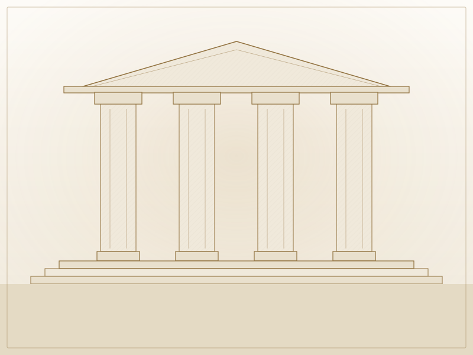
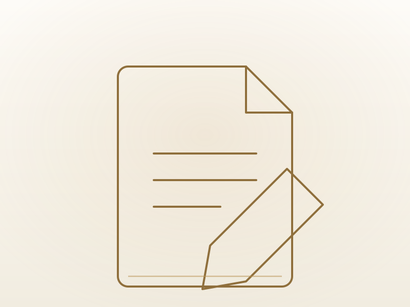
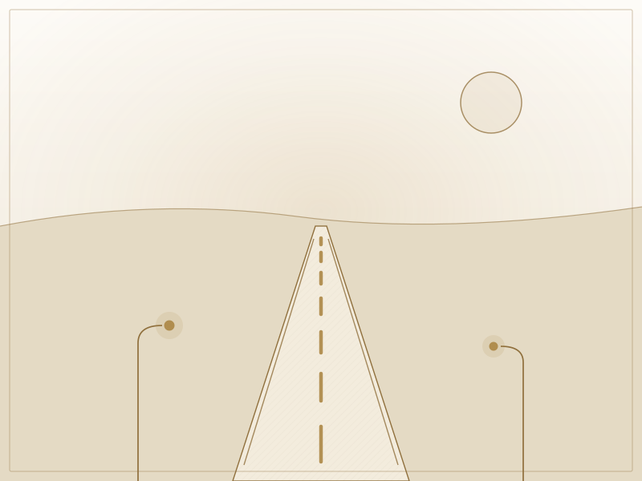
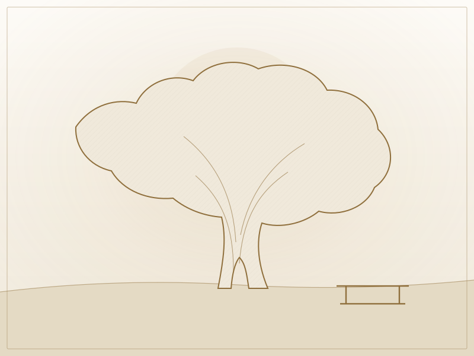
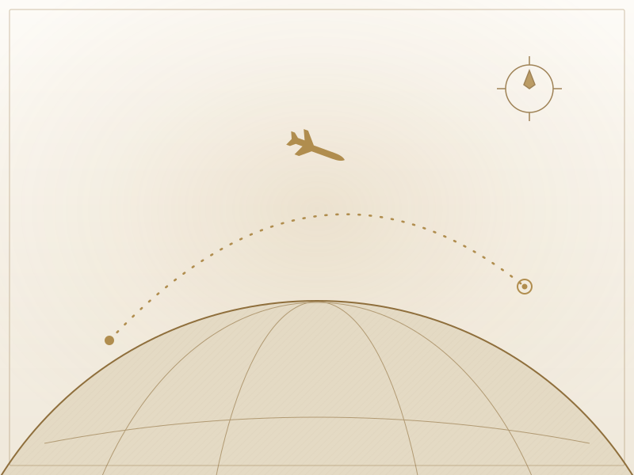
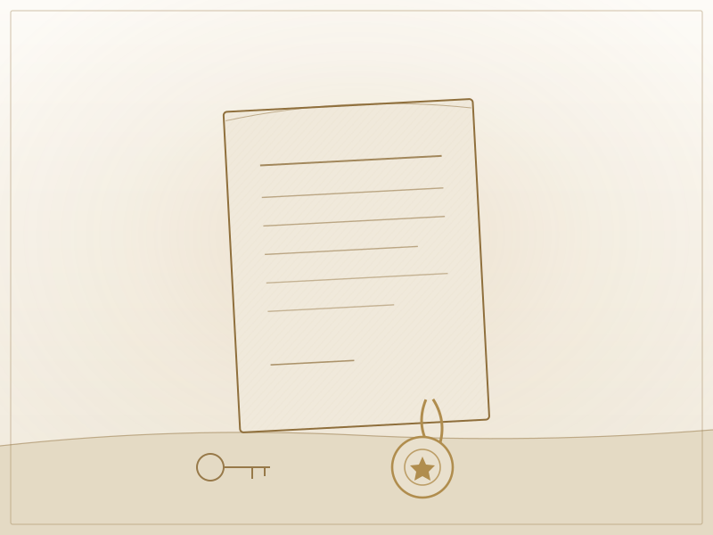
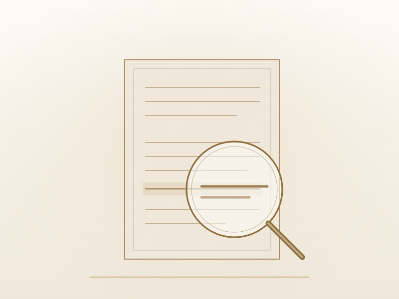
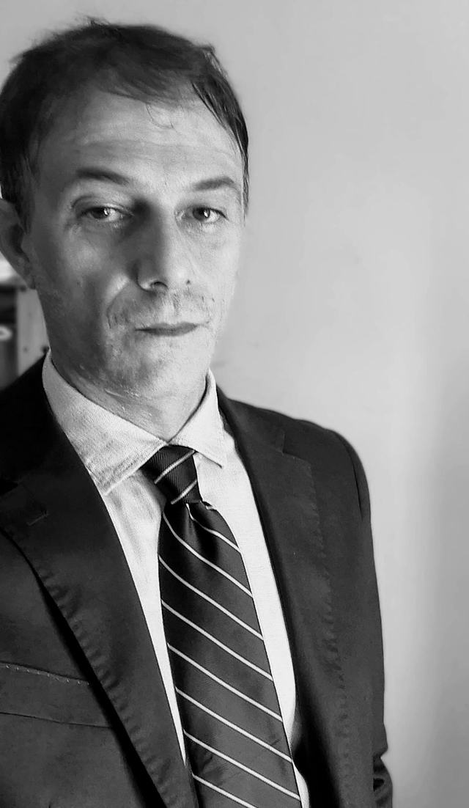

AvvocatoLuca Quartapelle
Diritto penale, diritto civile e risarcimento del danno, sinistri stradali, famiglia e persona, immigrazione, tutela del consumatore.
In studio a Teramo e, anche da remoto, in tutta Italia.
Lo Studio assiste persone e imprese, in sede giudiziale e stragiudiziale. Il colloquio si svolge su appuntamento, anche in videoconferenza.

Diritto penale
Difesa dell'indagato e dell'imputato in ogni fase, dalla prima notifica all'esecuzione della pena; assistenza alla persona offesa nella querela e come parte civile.
Approfondisci →
Diritto civile e risarcimento del danno
Contratti, recupero crediti, sfratti, liti condominiali e risarcimento del danno: dalla diffida al giudizio, fino all'esecuzione forzata se il debitore non adempie.
Approfondisci →
Sinistri stradali
Risarcimento delle lesioni e dei danni al veicolo: la richiesta all'assicuratore, la trattativa e, se l'offerta non è congrua, il giudizio. Particolare attenzione ai sinistri gravi o mortali.
Approfondisci →
Diritto di famiglia e della persona
Separazione e divorzio, affidamento e mantenimento dei figli, fine di una convivenza; amministrazione di sostegno e tutele per le persone fragili e i loro familiari.
Approfondisci →
Diritto dell'immigrazione
Permessi di soggiorno, ricongiungimento familiare, cittadinanza: la pratica davanti a Questura e Prefettura e, in caso di diniego, il ricorso al giudice.
Approfondisci →
Esecuzioni e opposizioni
Il titolo ottenuto va fatto valere: precetto, pignoramento di stipendi, conti e immobili, fino all'assegnazione. E per chi l'esecuzione la subisce: opposizioni all'esecuzione e agli atti, riduzione e conversione del pignoramento.
Approfondisci →
Diritto del consumatore
Un acquisto difettoso, un servizio non conforme, una clausola squilibrata, un addebito mai richiesto: garanzia legale di due anni, recesso nei contratti a distanza, nullità delle clausole vessatorie. E il giudizio si tiene davanti al giudice del luogo di residenza del consumatore.
Approfondisci →
Offro consulenza e assistenza, giudiziale e stragiudiziale, nelle materie civili e nella difesa penale.
Iscritto all'Albo dell'Ordine degli Avvocati di Teramo e negli elenchi per il patrocinio a spese dello Stato, settore civile e penale. Il deposito telematico degli atti consente la trattazione da remoto anche fuori distretto; ricevo su appuntamento, anche in videoconferenza.
Il profilo dello StudioOccorre assistenza legale?
Una telefonata o una email bastano per rappresentare il caso allo Studio: l'esame preliminare non comporta oneri e non impegna, e serve a chiarire subito prospettive e termini che corrono. L'incarico può essere conferito anche a distanza; il colloquio può svolgersi in videoconferenza.
Studio legale in Teramo
- Indirizzo
- Via G. D'Annunzio 12 — 64100 Teramo
Apri in Google Maps → - Telefono
- 0861 1886417
- Ricevimento
- Su appuntamento, anche in videoconferenza